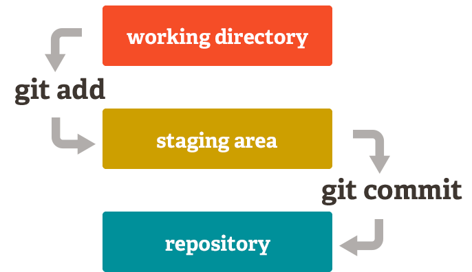

Para hacer uso de Git, ya sea mediante el uso de una consola de comandos o un programa con interfaz gráfica (GUI), vas a necesitar familiarizarte con una serie de términos que indican acciones sobre los archivos y su gestión.
Operaciones: Clone
Crea una copia local del repositorio ejecutando:
git clone
Como normalmente utilizamos servidores remotos (GitHub, Bitbucket, entre otros), es necesario agregar la ruta del servidor en donde está alojado dicho repositorio:
git clone username@host:/ruta/al/repositorio
Operaciones: Add y Commit
Para registrar cambios en el estado intermedio usamos:
git add NOMBRE_ARCHIVO | Si queremos añadir archivos específicos
git add . | Si queremos agregar todos los archivos (Git detecta cuáles sufrieron modificaciones)
Para subir cambios (de archivos en estado intermedio) en los archivos del repositorio local usamos:
git commit -m "Mensaje del commit"
Gráficamente hablando:

Operaciones: Push
Para subir los cambios del repositorio local al remoto, finalmente utilizamos:
git push origin master | Se puede remplazar master por otra branch, si se desea
Manejo de ramas o branches:
Las ramas son utilizadas para desarrollar funcionalidades aisladas unas de otras. La rama master es la rama "por defecto" cuando creas un repositorio. Las ramas creadas pueden fusionarse a master u otra rama, al terminar de desarrollar sobre ella.
Operaciones de branch:
Para crear una nueva rama llamada "feature_x" y posicionarse en ella se usa:
git checkout -b feature_x
Para posicionarse en otra rama, por ejemplo: master...
git checkout master
Y para borrar la rama:
git branch -d feature_x
Una rama nueva no estará disponible para los demás a menos que se suba la rama al repositorio remoto:
git push origin NOMBRE_BRANCH
Operaciones de actualización y fusión (Pull y Merge):
Para actualizar el repositorio local al cambio más nuevo, ejecutamos:
git pull
Ahora, para fusionar otra rama a tu rama activa (por ejemplo, master), utilizamos:
git merge NOMBRE_BRANCH
Git intentará fusionar automátizamente los cambios. Desafortunadamente, no siempre será posible y se podrán producir conflictos por segmentos de código parecidos entre los archivos. Tu serás el responsable de fusionar esos conflictos manualmente al editar los archivos mostrados por git. Después de modificarlos, necesitarás marcarlos como fusionados con:
git add NOMBRE_ARCHIVO
¡Felicitaciones!
Has culminado la segunda lección de Git y Git Flow